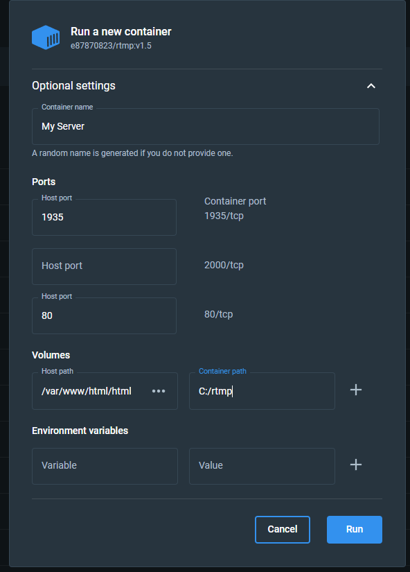

架設串流伺服器
映像檔使用 Ubuntu 18.04 LTS, 如果你使用 Windows 你可以使用 WSL2 Docker
安裝串流伺服器服務
指令安裝
docker run -d --name rtmp -p 80:80 -p 1935:1935 -v /var/www/html/html/res://c/Users/myusername/Desktop/Test e87870823/rtmp:v1.5
GUI 安裝
先用指令拉取 Image 再生成 Container
docker pull e87870823/rtmp:v1.5

Warning
You should enter a exist folder for container path !!
Ubuntu 安裝
sudo apt-get update
sudo apt-get install ca-certificates curl gnupg
sudo install -m 0755 -d /etc/apt/keyrings
curl -fsSL https://download.docker.com/linux/ubuntu/gpg | sudo gpg --dearmor -o /etc/apt/keyrings/docker.gpg
sudo chmod a+r /etc/apt/keyrings/docker.gpg
echo "deb [arch="$(dpkg --print-architecture)" signed-by=/etc/apt/keyrings/docker.gpg] https://download.docker.com/linux/ubuntu "$(. /etc/os-release && echo "$VERSION_CODENAME"" stable" | sudo tee /etc/apt/sources.list.d/docker.list > /dev/null
sudo apt-get update
sudo apt-get install docker-ce docker-ce-cli containerd.io docker-buildx-plugin docker-compose-plugin